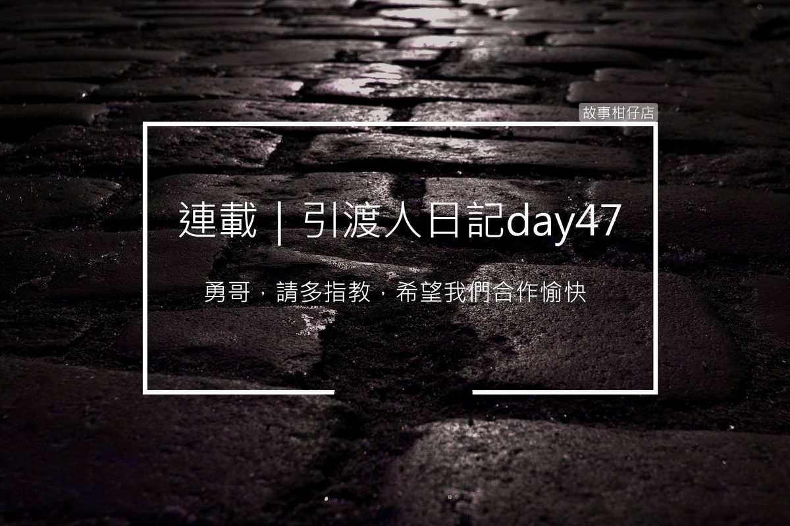

引渡人日記day 47 最佳拍檔

仲裁會議結束了，我的生活好像也沒啥不同，還是常常被借調到各單位打雜。唉！以為立功了，從此可以重回引渡人行列，開始為維護世界正義盡一份心力咧！
正當我一邊打掃奈何橋邊哼歌時，突然白姐叫我回業務部一趟，才剛進辦公室，發現鳥嘴組長也在裡頭。
「李勇，上次謝謝你了，多虧你順利引回黃小玲亡魂，才能大事化小。」一看到我，鳥嘴組長就向我點了點頭說道。
「組長，你客氣了啦，這本來就是我該做的。」
鳥嘴露出苦笑，「我已經不是組長了。」
啊！對吼！都忘記他被貶為引渡人，我還一直叫他組長，哪壺不開提哪壺。
黑哥湊上來打圓場，說：「聽說黃小玲進了枉死城，仍舊不斷要求找媽媽，這種執念深的亡魂，沒立刻引回地府，最容易出亂子！」
「聊夠了沒？」白姐敲敲桌子，不耐煩地說，「找李勇過來可不是讓你們聊八卦的。」
「對、對、對！你看我這記性。」黑哥拍了自己額頭一下，隨即看著手上的平板，邊搖頭嘆氣，「這王正義真不像話，偽造上班打卡記錄，又被舉報上班開小差，死性不改。」
哼！夜路走多了總是會遇到鬼，老天有眼啦，白姐黑哥總算知道正義哥有多機車。
白姐一邊飛快敲著鍵盤，頭也不抬地說：「王正義先留職停薪，讓專案組進行內部調查再說。」
幹！五告爽！可以好一陣子不用看到他了！真值得喝杯高粱慶祝一下！
「所以說，李勇，」黑哥堆起滿臉笑，「從今天起，鳥嘴就是你的新搭檔，他過去也是從引渡人幹上去的，資歷豐富的很！」
阿娘喂！壓力太大了吧，居然要我跟鳥嘴組長搭檔！聽說要升上機動組可不是件容易的事，什麼都要會，地府的人脈關係都得打點好，否則是要怎麼「機動」？一封公文就壓死死了啦！況且鳥嘴還是當上組長的人！
我看看黑哥，又看看白姐，不敢搭腔，反倒是鳥嘴往前跨了一步，向我伸出手：「勇哥，請多指教，希望我們合作愉快。」
啥米勇哥，夭壽喔，我想到初次見到正義哥的場景，現在遇到太客套的人都會怕。但又能怎樣？只能硬著頭皮將手伸出去握緊。
黑哥湊了上來，拍拍我們肩膀，說：「李勇，壓力不要太大。只是接近七月半，地府人手不足，平常你除了引魂之外，可能還需要去支援其他部門。你資歷淺，加上老鳥王正義出錯，請你多擔待了。」
我知道自己資歷淺啊，但我也真想知道，跟我同梯進來的胖子跟瘦皮猴現在混得怎麼樣？帶他們的老鳥應該比王正義好很多吧？搞不好很快就可以升官加薪……幹，不想了，愈想愈肚爛。
「李勇，你不是對王正義很不滿嗎？」白姐交疊起雙腿，笑了笑，「現在你可是鳥嘴的前輩，要當個好榜樣啊。才剛進來地府一個多月就有後輩，很難得哩。」
走了個機車前輩，現在居然來個大咖當我後輩？天公伯啊！我只想安分工作，為何要這樣捉弄我？